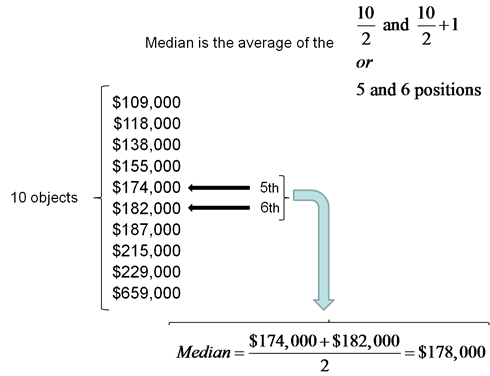

2.3
Measures of Central Tendency
Learning Objectives
Upon completion of this section, you should be able to
- Calculate the Mean, Median, and Mode for quantitative data
Numerical Summaries of Data
It is often desirable to use a few numbers to summarize the distribution of the data you are working with. One important aspect of that distribution is where a center is located. Measures of central tendency are discussed first in this section. A second aspect of a distribution is how spread out it is. In other words, how much the data in the distribution vary from one another. The next section describes measures of variability. Both of these combined are typically how we describe data distributions numerically.
Calculating the Mean
Why did we call it the mean and not average? We need to be careful with the word "average" as it means different things to different people in different contexts. One of the most common uses of the word "average" is what mathematicians and statisticians call the arithmetic mean, or just plain old mean for short. "Arithmetic mean" sounds rather fancy, but you have likely calculated a mean many times without realizing it; the mean is what most people think of when they use the word "average".
Mean
The mean for a set of quantitative data is the sum of the data values divided by the number of values. If the data comes from a sample we call it a sample mean and denote it with the letter x and a bar on top, . If the data comes from a population we denote it with the lowercase greek letter mu, μ (mew). Both are calculated in the same manner, but for a population we typically use a capital N for the number of values. For samples we use the lower case n.
Example 1
Marci’s exam scores for her last math class were: 79, 86, 82, 94. Find her mean exam score.
Solution
The mean of these values would be:
. Typically we round means to one more decimal place than the original data had. In this case, we would round 85.25 to 85.3.
Video Solution Example 1 (1 min 3 secs - CC) Another example starts after the 1:03 mark of the video.
Example 2
The number of touchdown (TD) passes thrown by each of the 31 teams in the National Football League in the 2000 season are shown below. Find the mean number of passes thrown.
37 33 33 32 29 28 28 23 22 22 22 21 21 21 20
20 19 19 18 18 18 18 16 15 14 14 14 12 12 9 6
Solution
Adding these values, we get 634 total TDs. Dividing by 31, the number of data values, we get 634/31 = 20.4516. It would be appropriate to round this to 20.5.
It would be most correct for us to report that “The mean number of touchdown passes thrown in the NFL in the 2000 season was 20.5 passes,” but it is not uncommon to see the more casual word “average” used in place of “mean.”
Video Solution Example 2 (2 mins 28 secs - CC)
Try it Now 1
The price of a jar of peanut butter at 5 stores was: $3.29, $3.59, $3.79, $3.75, and $3.99. Find the mean price.
Hint 1
Answer
Sometimes the data is given to us in a frequency table instead of a direct list of all values. When this happens we can still find the mean by recalling that repeated addition is actually just multiplication. So if we see the data value of 15 and has a frequency of 6 from the table we would in the formula for the mean add 15 six different times in the numerator. This would be the same as taking the value 15 and multiply by 6 (as we will see in the next example):
Example 3
The one hundred families in a particular neighborhood are asked their annual household income, to the nearest $5 thousand dollars. The results are summarized in a frequency table below. Find the mean household income.
| Income (thousands of dollars) | Frequency |
|---|---|
| 15 | 6 |
| 20 | 8 |
| 25 | 11 |
| 30 | 17 |
| 35 | 19 |
| 40 | 20 |
| 45 | 12 |
| 50 | 7 |
Solution
Calculating the mean by hand could get tricky if we try to type in all 100 values:
We could calculate this more easily by noticing that adding 15 to itself six times is the same as 15·6 = 90. Using this simplification, we get
The mean household income of our sample is 33.9 thousand dollars ($33,900).
Video Solution Example 3 (2 mins 34 secs - CC) Another example starts after the 2:34 mark of the video.
Example 4
Extending off the last example, suppose a new family moves into the neighborhood example that has a household income of $5 million ($5000 thousand). What is the mean household income?
Solution
Adding this to our sample, our mean is now:
While 83.1 thousand dollars ($83,069) is the correct mean household income, it no longer represents a “typical” value.
Video Solution Example 4 (1 mins 52 secs - CC)
Calculating the Median
Imagine the data values on a see-saw or balance scale. The mean is the value that keeps the data in balance, like in the picture below.

If we graph our household data, the $5 million data value is so far out to the right that the mean has to adjust up to keep things in balance
For this reason, when working with data that have outliers – values far outside the primary grouping – it is common to use a different measure of center, the median.
Median
The median of a set of data is the value in the middle when the data is in order from least to greatest.
To find the median, begin by listing the data in order from least to greatest and count how many data values there are.
Number of data values is odd: If the number of data values, n, is an odd number, then the median is the middle value of the ordered data. The value of the median is found by rounding n/2 up to the next whole number and going to that position in the ordered data list. For example, if the total number of data values is 87, then which rounds up to 44 and the median is found in the 44th position in the ordered data list.
Number of data values is even: If the number of data values is even, then there is no one middle position in the list, so we find the mean of the two middle values. The value of the median is found by locating the positions in the data list and taking the mean of those two values. For example, if the total number of data values is 100, then we find the values in the positions and take the mean of those two values to be the median.
Example 5
Find the median of these quiz scores: 5 10 8 6 4 8 2 5 7 7
Solution
We start by listing the data in order: 2 4 5 5 6 7 7 8 8 10
Since there are 10 data values, an even number, there is no one middle number. So we find the mean of the two middle numbers. The positions are: . Going through the data we see 6 is located in the 5th position and 7 is located in the 6th position. Take the mean of those two data values to get the median:
The median quiz score was 6.5.
Video Solution Example 5 (4 mins 43 secs - CC) Another example starts after the 3:45 mark of the video.
Example 6
The number of touchdown (TD) passes thrown by each of the 31 teams in the National Football League in the 2000 season are shown below. Find the median number of passes thrown.
37 33 33 32 29 28 28 23 22 22 22 21 21 21 20
20 19 19 18 18 18 18 16 15 14 14 14 12 12 9 6
Solution
Normally we would start by listing the data in order. Luckily, it was already in decreasing order, so we can work with it without needing to reorder it first.
Since there are 31 data values, an odd number, the median will be the middle value in the ordered lists. This position is found by taking , and rounding up to 16. The value 16 is the position of the median, so we go back to the data and find that the 16th data value is 20. The median number of touchdown passes in the 2000 season was 20 passes. Notice that for this data, the median is fairly close to the mean we calculated earlier, 20.5.
Video Solution Example 6 (57 secs - CC)
Example 7
The following are the closing prices of 10 recent homes sold in a local market.
- $229,000
- $155,000
- $109,000
- $187,000
- $182,000
- $659,000
- $215,000
- $138,000
- $174,000
- $118,000
Find the median home sale price.
Solution
Organize the sales prices from smallest to largest and follow the rule for even number of data values as stated above.
Try it Now 2
The price of a jar of peanut butter at 5 stores were: $3.29, $3.59, $3.79, $3.75, and $3.99. Find the median price.
Hint 1
Answer
If the data is provided in a frequency table we can still find the median, but we will need to use the frequency values to help locate positions of the data. The next example goes through the process of finding the median for that frequency table data.
Example 8
Let us return now to our original household income data from earlier. The one hundred families in a particular neighborhood are asked their annual household income, to the nearest $5 thousand dollars. The results are summarized in a frequency table below. Find the median household income.
| Income (thousands of dollars) | Frequency |
|---|---|
| 15 | 6 |
| 20 | 8 |
| 25 | 11 |
| 30 | 17 |
| 35 | 19 |
| 40 | 20 |
| 45 | 12 |
| 50 | 7 |
Solution
Here we have 100 data values. If we didn’t already know that, we could find it by adding the frequencies. Since 100 is an even number, we need to find the mean of the middle two data values - the 50th and 51st data values. To find these, we start counting up from the bottom:
- There are 6 data values of $15, so Values 1 to 6 are $15 thousand
- The next 8 data values are $20, so Values 7 to (6+8)=14 are $20 thousand
- The next 11 data values are $25, so Values 15 to (14+11)=25 are $25 thousand
- The next 17 data values are $30, so Values 26 to (25+17)=42 are $30 thousand
- The next 19 data values are $35, so Values 43 to (42+19)=61 are $35 thousand
From this we can tell that values 50 and 51 will be $35 thousand, and the mean of these two values is $35 thousand. The median income in this neighborhood is $35 thousand.
Video Solution Example 8 (3 mins 27 secs - CC) Another example starts after the 2:15 mark of the video.
Example 9
Add in a new neighbor to our previous examples whose household income is $5 million. Find the new median.
Solution
If we add in the new neighbor with a $5 million household income, then there will be 101 data values, and the 51st value will be the median. As we discovered in the last example, the 51st value is $35 thousand. Notice that the new neighbor did not affect the median in this case. The median is not swayed as much by outliers as the mean is.
Video Solution Example 9 (1 mins 11 secs - CC)
Median vs Mean
Since the median is simply a location marker in the data set it is very resistant to extreme measurements in the data set.
–For instance if we use the median to measure the center of house prices in a local market the median will have very little change in value when a mansion is sold in that market as we can see from Example 7 if we compare the Median price of $178,000 to the Mean price of $216,600 (verify this calculation on your own).
When anybody gives you the "average" value for a data set you will want to make sure what you are dealing with as both the mean and median give a measure of the center of the data. There are times when the median is reported as an average or typical value instead of the mean. The home sales data can be used in two different ways depending on your perspective (a buyer or seller of a home).
The mean home prices are at $216,600. Wouldn’t it be a great time to sell! Call Sellme at 555-5550.
Thinking of moving to Tucson, give me a call the median home sales is currently at $178,000. Call BuyMeCheap at 555-5551.
Which measure of center you use can change the story about the data slightly. How do you know which one to pick? In most cases the mean will be a good choice, but not if there are extreme outliers or the data distribution is heavily skewed on one side. A safer assumption would be to use the mean with the data shows a symmetric distribution. We will not be going into how to measure skewness in this book, but it is a subject that has extensive literature in statistics (not a typical topic you will find in an introductory statistics course you may take in the near future).
Try it Now 3
The playbill for the Alley Theatre in Houston wants to appeal to advertisers. They reported the mean household income and the median age of theater goers.
What do you think?
What might have guided their choice of the mean or median?
Answer
Calculating the Mode
In addition to the mean and the median, there is one other common measurement of the "typical" value of a data set: the mode.
Mode
The mode is the element of the data set that occurs most frequently.
The mode is fairly useless with data like weights or heights where there are a large number of possible values. The mode is most commonly used for categorical (qualitative) data, for which median and mean cannot be computed.
Example 10
In our vehicle color survey, we collected the data below. Find the mode.
| Color | Frequency |
|---|---|
| Blue | 25 |
| Green | 52 |
| Red | 41 |
| White | 36 |
| Black | 39 |
| Grey | 23 |
Solution
For this data, Green is the mode, since it is the data value that occurred the most frequently.
Video Solution Example 10 (48 secs - CC)
It is possible for a data set to have more than one mode if several categories have the same frequency, or no modes if each every category occurs only once or the same amount.
Try it Now 4
Reviewers were asked to rate a product on a scale of 1 to 5. Find
a. The mean rating
b. The median rating
c. The mode rating
| Rating | Frequency |
|---|---|
| 1 | 4 |
| 2 | 8 |
| 3 | 7 |
| 4 | 3 |
| 5 | 1 |
Answer
Exercises
- The table below shows scores on a Math test. Compute the Mean, Median, and Mode. Round your answer to two places.
80 50 50 90 70 70 100 60 70 80 70 50 90 10 80 70 30 80 80 70 100 60 60 50 Answer
- A group of adults where asked how many cars they had in their household. Compute the Mean, Median, and Mode. Round your answer to two places.
1 4 2 2 1 2 3 3 1 4 2 2 1 2 1 3 2 2 1 2 1 1 1 2 Answer
- A group of diners were asked how much they would pay for a meal. Their responses were: $7.50, $8.25, $9.00, $8.00, $7.25, $7.50, $8.00, $7.00.
- Find the mean
- Find the median
Answer
- You recorded the time in seconds it took for 8 participants to solve a puzzle. The times were: 15.2, 18.8, 19.3, 19.7, 20.2, 21.8, 22.1, 29.4.
- Find the mean to two decimal places
- Find the median
Answer
- Jasmine collected data on how many days it would take an order from Netflix to arrive at her door. Find the mean, median and mode for the number of days for the order to arrive at her door. Round your answer to the nearest tenth.

Answer
- Make up three data sets with 5 numbers each that have:
- the same mean but different medians.
- the same median but different means.
- What observations can you make about the mean and median from this exercise?
- Do you think it is important to see the distribution of that data along with the measure of center? Why or why not?
- Create a scenario for which presenting the mean may be bias in understanding a set of data (include your data and the mean calculation and why that measure of center may not give a fair representation of the center for the data).
- Is the student correct or not - explain your answer. John saw that there were five students who scored a 10 on the quiz and three that scored a 8. He adds up 8 and 10 to get 18 and divides by two and stated that the mean is 9.
Answer
- Your younger brother comes home one day after taking a science test. He says that someone at school told him that "60% of the students in the class scored above the median test grade." What is wrong with this statement? What if he said "60% of the students scored below the mean?"
- There are five values for a data set written on a sheet of paper along with the mean of 10 that was calculated. The values that we can read are 8, 12, 10, and 7. What is the missing data value?
Answer